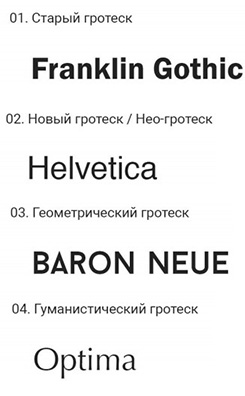

Мой Справочник | WEB-DESIGN | Типографика
Рекомендации:
- Шрифты можно подразделять на (нужно соблюдать роль шрифта во всем проекте):
- Основной (для текста, наборный)
- Заголовочный
- Подзаголовочный
- Цифровой, кодовый, цитатный (для шифров, кодов, цитат и т.д.)
- Декоративный (для логотипов, отдельных фраз)
- Примерно 70% сайта составляет текстовый контент, остальные 30% - изображения, иконки, декаративные элементы
- Не желательно совмещать один жирный шрифт с другим жирным
- Нужно соблюдать типографическую иерархию (расставлять акценты для заголовков, подзаголовков и простого текста)
- Лучше когда есть сразу несколько начетаний одного шрифта (Regular, Bold и Light)
- Не стоит для одного проекта использовать большое количество шрифтов (достаточно 1-2, максимум 3).
- Не нужно использовать цветной текст или текст с тенью поверх картинок, нужно использовать оверлэй c темным цветом и полупрозрачностью
rgba(0,0,0,0.5) - С цветом текста лучше не экспериментировать - если вы используете белый фон, то пишите черным текстом, и наоборот. Не следует использовать яркие цвета больших текстовых блоков.
Онлайн-сервисы с шрифтами
- Шрифты - Google Fonts
- Шрифты - Fonts4web(RUS)
- Шрифты - Fontriver(RUS)
- Шрифты - Fontstorage
- Шрифты - Webfonts
- Конвертатор шрифтов - Fontsquirrel
- Конвертатор шрифтов - Web-font-generator
- Конвертатор шрифтов - OnlineFontConverter
- Конвертатор шрифтов - Transfonter.org
- Иконочный шрифт - Glyphter
- Иконочный шрифт - Fontello
- Иконочный шрифт - Font Awesome
- Вертикальный ритм текста
Шрифтовые пары
Нужно использовать шрифтовые пары (чтобы гармонично смотрелись заголовки и параграфы).
Должны гармонично смотреться друг с другом. Лучше выбирать из одного семейства, искать похожие, либо подбирать по контрасту.
Заголовки
- 32pt ... 100pt (42 ... 133px) - примерные границы, лучше придерживаться небольших значений
- Трекинг: 0 ... -50 (неплохо могу смотреться слипшиеся буквы в заголовках)
- Шрифты для крупных заголовков должны быть читабельными, но в то же время запоминающимися.
- Задача — притягивать внимание. Заголовки должны быть жирными, акцентными.
- В заголовке должна отражаться основная мысль. Акцидентный шрифт.
- В конце заголовка точка НЕ СТАВИТЬСЯ
- Заголовок в тексте должен стоять ближе к следующему абзацу, чем к предыдущему.
- Пробел между строками прописных букв не может быть меньше кегля. (по правилам типографики)
- Должна быть логичная ИЕРАРХИЯ ЗАГОЛОВКОВ. Чем важнее заголовок, тем он крупнее.
- Можно выстраивать СМЫСЛОВУЮ ИЕРАРХИЮ внутри амого заголовка, выделяя амые важные слова большим кеглем или цветом.
Подзаголовки
- 18pt ... 32pt (24 ... 42px) - примерные границы
Наборный текст
- 12pt ... 18pt (16 ... 24px) - примерные границы
- 14pt (18.6px) - стандарт для Regular наборного текста
- Трекинг: 0 ... 30 (примерно 20 можно использовать)
- Оптимальное значение 45-90 символов, включая пробелы.
- Наборный текст лучше располагать в одну колонку, много колонок нужно создавать только при острой необходимости
- Шрифты для основного (наборного) текста должны быть ненавязчивыми и хорошо читабельными - от этого зависит, насколько быстро и просто пользователь будет воспринимать информацию с сайта.
- Основной текст для описания информации. Акценты можно делать жирным или курсивом, но не злоупотреблять. Для гротесков акцент лучше жирным чем курсивом.
- Должна быть визуальная ИЕРАРХИЯ заголовков и параграфов
- Моноширинные тексты плохо читабельные.
- Наборный должен быть сбалансированным.
- Шрифты без засечек хорошо читается в мобильных приложениях.

| Терминология | ||||
|---|---|---|---|---|
| Гарнитура - семейство шрифтов с общими стилистическими особенностями Шрифт - набор символов, составляющие единую стилистическую и композиционную картину |
font-family: "Open Sans";
|
Шрифты нужно выбирать осознанно. Учитывать задачи, аудиторию, эмоции, общий дизайн и концепцию. К шрифтам НЕ НУЖНО применять большое количество графических эффектов, считается дурным тоном (такие как градиенты) |
||
| Антиква (serif) - шрифты с засечками |
font-family: serif;"Times New Roman", Times,
|
Старый стиль (Vollkorn, Stoke, Ladoga, Narevik)Умеренный контраст, каллиграфичность, явно выражен наклон овалов и полуовалов. Первые машинописные шрифты, которые эволюционировали из каллиграфии. Переходный стиль (Baskerville, Aelita)Больший контраст. Исчезает наклон и каллиграфичность. Больше геометрии. Угловатые засечки. Современный стиль (Didot Bodoni, Didona, Yeseva One)Очень сильный контраст. Брусковый стиль (Roboto Slab, Geometric Slabserif, Pragmatica, Clarendon, Traktir, Titla brus)Брусковые засечки. |
||
| Гротеск (sans-serif) - шрифты без засечек |
font-family: sans-serif; Arial, Verdana, Tahoma,
|
Старый стиль (Franklin Gothic)
Небольшой контраст, моноширинные, грубая форма. Новый стиль (Helvetica)
Минималистичная форма. Высокий строчный знак Геометрический стиль (BARON NEUE)
Близкий геометрическим формам, круг, квадрат, треугольник, прямоугольник. Гуманистический стиль (Optima)
Каллиграфичный штрих |
||
|
Моноширинные (monospace) ширина символа = const |
font-family: monospace;"Courier New",
|
Для кода, шифров, серийных номеров и т.д. | ||
| Рукописные (script) |
Перо (Bickham Gothic)
Имитируют написание остроконечным или острым пером Связные (Bukhari Script)
Имитируют написание разными инструментами с разным контрастом штриха Несвязные монолинейные (Bad Script)
Имитируют написание карандашом, маркером, кистью |
|||
| Декоративные (decorative) |
Для титульных листов, ярлыков, афиш, плакатов, упаковок и т.п. |
|||
| Кегль - размер высоты буквы |
font-size: 16px;
|
|||
|
Кёрнинг - интервал между буквами в зависимости от их формы Трекинг - изменение кёрнинга |
letter-spacing: 1px;
|
Трекинг лучше использовать только для ПРОПИСНЫХ букв. 0 - кёрнинг выключен Optical - алгоритм браузера Metrics - родные алгоритмы кёрнинга, заданные разработчиками |
||
| Интерлиньяж - растояние между строк |
line-height: 20px;
|
Оптимальное значение для лучшего чтения в диапозоне от 120-145% от кегля. Чем шире абзац - тем интерлиньяж должен блиде к 145%. Должен быть больше пробела. Элементы списков должны иметь дополнительные отступы. Должен быть всегда больше высоты строчного и прописного знаков. |
||
| Длина строки - кол-во символов в строке | Оптимальное значение 45-90 символов, включая пробелы. | |||
| Графема - базовая форма знака, скелет буквы | Есть целая наука и терминология по изготовлению шрифтов | |||
| Начертание - возможные варианты рисунка наборного шрифта одной гарнитуры |
font-weight: bold;
|
Основное, капитель, старостильное, прямое, наклонное, курсив, жирность |
||
| Висячие слова - плохой тон. Одинокое слово в конце абзаца, союзы и предлоги, оставшиеся в конце строки. |
Нужно использовать неразрывные пробелы
|
|||
| Выключка - выравнивание текста. | text-align: left; |
|||
| Гиперссылка | Должна быть достаточно длинной для удобства нажатия, но не очень. Если сслылок в абзаце много, то их лучше выносить отдельно под абзац. | |||
|
Тире (-) - орфографический знак, короткая чёрточка (серо-буро-малиновый) |
1—8 классы (без пробелов) Термин — определение (с пробелами) — Привет! (диалоги) Тире НЕ ПЕРЕНОСИТЬСЯ на новую строку, а остаётся на предыдущей |
(–) короткое (—) длинное |
||
| Дефис (-) - пунктационый знак, длинная чёрточка («назвался груздём - полезай в кузов») | ||||
| Кавычки (« », " ", ' ') |
«Кавычки в "кавычках"» Шрифт Avabella - красивые кавычки |
В текстах используются кавычки-ёлочки Если кавычки в кавычках, то внешние ёлочки, а внутренние лапки-запятушки(двойные). |
||
| Правило внутреннего и внешнего | ||||
| Внешние отступы должны быть больше внутренних | Поля -> Заголовки -> Абзацы -> Элементы | |||
| Швейцарская типографика | ||||
| Гарнитуры являются голосом. Кегль показывает носколько громко или тихо мы говорим. Начертание задаёт тон общения. |
Большие заголовки, фотографии вместо иллюстраций, выравнивание только по левому краю. Цвет текста всегда чёрный. Цвет фона и илюстраций всегда один яркий. |
|||
| Цифры | ||||
| Правила для цифр |
|
|||
Поля